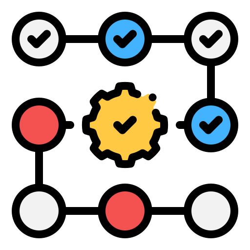
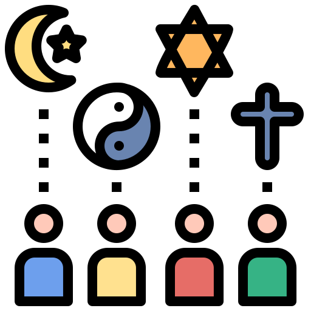
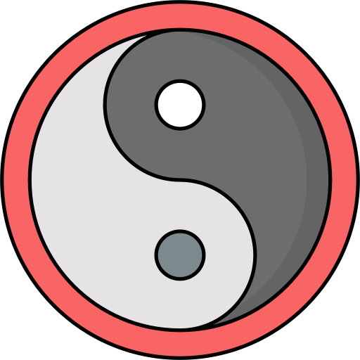

Time is the continuous progression of existence that occurs in an apparently irreversible succession from the past, through the present, and into the future.123 It is a component quantity of various measurements used to sequence events, to compare the duration of events (or the intervals between them), and to quantify rates of change of quantities in material reality or in the conscious experience.4567 Time is often referred to as a fourth dimension, along with three spatial dimensions.8
Time is one of the seven fundamental physical quantities in both the International System of Units (SI) and International System of Quantities. The SI base unit of time is the second, which is defined by measuring the electronic transition frequency of caesium atoms. General relativity is the primary framework for understanding how spacetime works.9 Through advances in both theoretical and experimental investigations of spacetime, it has been shown that time can be distorted and dilated, particularly at the edges of black holes.
Throughout history, time has been an important subject of study in religion, philosophy, and science. Temporal measurement has occupied scientists and technologists, and has been a prime motivation in navigation and astronomy. Time is also of significant social importance, having economic value ("time is money") as well as personal value, due to an awareness of the limited time in each day ("carpe diem") and in human life spans.

The concept of time can be complex. Multiple notions exist, and defining time in a manner applicable to all fields without circularity has consistently eluded scholars.71011 Nevertheless, diverse fields such as business, industry, sports, the sciences, and the performing arts all incorporate some notion of time into their respective measuring systems.121314 Traditional definitions of time involved the observation of periodic motion such as the apparent motion of the sun across the sky, the phases of the moon, and the passage of a free-swinging pendulum. More modern systems include the Global Positioning System, other satellite systems, Coordinated Universal Time and mean solar time. Although these systems differ from one another, with careful measurements they can be synchronized.
In physics, time is a fundamental concept to define other quantities, such as velocity. To avoid a circular definition,15 time in physics is operationally defined as "what a clock reads", specifically a count of repeating events such as the SI second.61617 Although this aids in practical measurements, it does not address the essence of time. Physicists developed the concept of the spacetime continuum, where events are assigned four coordinates: three for space and one for time. Events like particle collisions, supernovas, or rocket launches have coordinates that may vary for different observers, making concepts like "now" and "here" relative. In general relativity, these coordinates do not directly correspond to the causal structure of events. Instead, the spacetime interval is calculated and classified as either space-like or time-like, depending on whether an observer exists that would say the events are separated by space or by time.18 Since the time required for light to travel a specific distance is the same for all observers—a fact first publicly demonstrated by the Michelson–Morley experiment—all observers will consistently agree on this definition of time as a causal relation.19
General relativity does not address the nature of time for extremely small intervals where quantum mechanics holds. In quantum mechanics, time is treated as a universal and absolute parameter, differing from general relativity's notion of independent clocks. The problem of time consists of reconciling these two theories.20 As of 2025, there is no generally accepted theory of quantum general relativity.21
Methods of temporal measurement, or chronometry, generally take two forms. The first is a calendar, a mathematical tool for organising intervals of time on Earth,22 consulted for periods longer than a day. The second is a clock, a physical mechanism that indicates the passage of time, consulted for periods less than a day. The combined measurement marks a specific moment in time from a reference point, or epoch.

Artifacts from the Paleolithic suggest that the moon was used to reckon time as early as 6,000 years ago.23disputed – discuss Lunar calendars were among the first to appear, with years of either 12 or 13 lunar months (either 354 or 384 days). Without intercalation to add days or months to some years, seasons quickly drift in a calendar based solely on twelve lunar months. Lunisolar calendars have a thirteenth month added to some years to make up for the difference between a full year (now known to be about 365.24 days) and a year of just twelve lunar months. The numbers twelve and thirteen came to feature prominently in many cultures, at least partly due to this relationship of months to years.
Other early forms of calendars originated in Mesoamerica, particularly in ancient Mayan civilization, in which they developed the Maya calendar, consisting of multiple interrelated calendars. These calendars were religiously and astronomically based; the Haab' calendar has 18 months in a year and 20 days in a month, plus five epagomenal days at the end of the year.24 In conjunction, the Maya also used a 260-day sacred calendar called the Tzolk'in.25
The reforms of Julius Caesar in 45 BC put the Roman world on a solar calendar. This Julian calendar was faulty in that its intercalation still allowed the astronomical solstices and equinoxes to advance against it by about 11 minutes per year. Pope Gregory XIII introduced a correction in 1582; the Gregorian calendar was only slowly adopted by different nations over a period of centuries, but it is now by far the most commonly used calendar around the world.
During the French Revolution, a new clock and calendar were invented as part of the dechristianization of France and to create a more rational system in order to replace the Gregorian calendar. The French Republican Calendar's days consisted of ten hours of a hundred minutes of a hundred seconds, which marked a deviation from the base 12 (duodecimal) system used in many other devices by many cultures. The system was abolished in 1806.26

A large variety of devices have been invented to measure time. The study of these devices is called horology.27 They can be driven by a variety of means, including gravity, springs, and various forms of electrical power, and regulated by a variety of means.
h3 to cast shadows from a gnomon onto a set of markings calibrated to indicate the local time, usually to the hour. The idea to separate the day into smaller parts is credited to Egyptians because of their sundials, which operated on a duodecimal system. The importance of the number 12 is due to the number of lunar cycles in a year and the number of stars used to count the passage of night.28 Obelisks made as a gnomon were built as early as c. 3500 BC.29 An Egyptian device that dates to c. 1500 BC, similar in shape to a bent T-square, also measured the passage of time from the shadow cast by its crossbar on a nonlinear rule. The T was oriented eastward in the mornings. At noon, the device was turned around so that it could cast its shadow in the evening direction.30
Alarm clocks reportedly first appeared in ancient Greece c. 250 BC with a water clock made by Plato that would set off a whistle.31 The hydraulic alarm worked by gradually filling a series of vessels with water. After some time, the water emptied out of a siphon.32 Inventor Ctesibius revised Plato's design; the water clock uses a float as the power drive system and uses a sundial to correct the water flow rate.33
In medieval philosophical writings, the atom was a unit of time referred to as the smallest possible division of time. The earliest known occurrence in English is in Byrhtferth's Enchiridion (a science text) of 1010–1012,34 where it was defined as 1/564 of a momentum (11⁄2 minutes),35 and thus equal to 15/94 of a second. It was used in the computus, the process of calculating the date of Easter. The most precise timekeeping device of the ancient world was the water clock, or clepsydra, one of which was found in the tomb of Egyptian pharaoh Amenhotep I. They could be used to measure the hours even at night but required manual upkeep to replenish the flow of water. The ancient Greeks and the people from Chaldea (southeastern Mesopotamia) regularly maintained timekeeping records as an essential part of their astronomical observations. Arab inventors and engineers, in particular, made improvements on the use of water clocks up to the Middle Ages.36 In the 11th century, Chinese inventors and engineers invented the first mechanical clocks driven by an escapement mechanism.A contemporary quartz watch, 2007
Incense sticks and candles were, and are, commonly used to measure time in temples and churches across the globe. Water clocks, and, later, mechanical clocks, were used to mark the events of the abbeys and monasteries of the Middle Ages. The passage of the hours at sea can also be marked by bell. The hours were marked by bells in abbeys as well as at sea. Richard of Wallingford (1292–1336), abbot of St. Alban's abbey, famously built a mechanical clock as an astronomical orrery about 1330.3738 The hourglass uses the flow of sand to measure the flow of time. They were also used in navigation. Ferdinand Magellan used 18 glasses on each ship for his circumnavigation of the globe (1522).39 The English word clock probably comes from the Middle Dutch word klocke which, in turn, derives from the medieval Latin word clocca, which ultimately derives from Celtic and is cognate with French, Latin, and German words that mean bell.
Great advances in accurate time-keeping were made by Galileo Galilei and especially Christiaan Huygens with the invention of pendulum-driven clocks along with the invention of the minute hand by Jost Burgi.40 There is also a clock that was designed to keep time for 10,000 years called the Clock of the Long Now. Alarm clock devices were later mechanized. Levi Hutchins's alarm clock has been credited as the first American alarm clock, though it can only ring at 4 a.m. Antoine Redier was also credited as the first person to patent an adjustable mechanical alarm clock in 1847.41 Digital forms of alarm clocks became more accessible through digitization and integration with other technologies, such as smartphones. Chip-scale atomic clocks, such as this one unveiled in 2004, are expected to greatly improve GPS location.42
The most accurate timekeeping devices are atomic clocks, which are accurate to seconds in many millions of years,43 and are used to calibrate other clocks and timekeeping instruments. Atomic clocks use the frequency of electronic transitions in certain atoms to measure the second. One of the atoms used is caesium; most modern atomic clocks probe caesium with microwaves to determine the frequency of these electron vibrations.44 Since 1967, the International System of Measurements bases its unit of time, the second, on the properties of caesium atoms. SI defines the second as 9,192,631,770 cycles of the radiation that corresponds to the transition between two electron spin energy levels of the ground state of the 133Cs atom. A portable timekeeper that meets certain precision standards is called a chronometer. Initially, the term was used to refer to the marine chronometer, a timepiece used to determine longitude by means of celestial navigation, a precision first achieved by John Harrison. More recently, the term has also been applied to the chronometer watch, a watch that meets precision standards set by the Swiss agency COSC.
In modern times, the Global Positioning System in coordination with the Network Time Protocol can be used to synchronize timekeeping systems across the globe. As of May 2010, the smallest time interval uncertainty in direct measurements is on the order of 12 attoseconds (1.2 × 10−17 seconds), about 3.7 × 1026 Planck times.45 The time measured was the delay caused by out-of-sync electron waves' interference patterns.46

The second (s) is the SI base unit. A minute (min) is 60 seconds in length (or, rarely, 59 or 61 seconds when leap seconds are employed), and an hour is 60 minutes or 3600 seconds in length. A day is usually 24 hours or 86,400 seconds in length; however, the duration of a calendar day can vary due to daylight saving time and leap seconds.
A time standard is a specification for measuring time: assigning a number or calendar date to an instant (point in time), quantifying the duration of a time interval, and establishing a chronology (ordering of events). In modern times, several time specifications have been officially recognized as standards, where formerly they were matters of custom and practice. The invention in 1955 of the caesium atomic clock has led to the replacement of older and purely astronomical time standards such as sidereal time and ephemeris time, for most practical purposes, by newer time standards based wholly or partly on atomic time using the SI second.
International Atomic Time (TAI) is the primary international time standard from which other time standards are calculated. Universal Time (UT1) is mean solar time at 0° longitude, computed from astronomical observations. It varies from TAI because of the irregularities in Earth's rotation. Coordinated Universal Time (UTC) is an atomic time scale designed to approximate Universal Time. UTC differs from TAI by an integral number of seconds. UTC is kept within 0.9 second of UT1 by the introduction of one-second steps to UTC, the leap second. The Global Positioning System broadcasts a very precise time signal based on UTC time.
The surface of the Earth is split into a number of time zones. Standard time or civil time in a time zone deviates a fixed, round amount, usually a whole number of hours, from some form of Universal Time, usually UTC. Most time zones are exactly one hour apart, and by convention compute their local time as an offset from UTC. For example, time zones at sea are based on UTC. In many locations (but not at sea) these offsets vary twice yearly due to daylight saving time transitions.
Some other time standards are used mainly for scientific work. Terrestrial Time is a theoretical ideal scale realized by TAI. Geocentric Coordinate Time and Barycentric Coordinate Time are scales defined as coordinate times in the context of the general theory of relativity, with TCG applying to Earth's center and TCB to the solar system's barycenter. Barycentric Dynamical Time is an older relativistic scale related to TCB that is still in use.
Many ancient cultures, particularly in the East, had a cyclical view of time. In these traditions, time was often seen as a recurring pattern of ages or cycles, where events and phenomena repeated themselves in a predictable manner. One of the most famous examples of this concept is found in Hindu philosophy, where time is depicted as a wheel called the "Kalachakra" or "Wheel of Time." According to this belief, the universe undergoes endless cycles of creation, preservation, and destruction.47
Similarly, in other ancient cultures such as those of the Mayans, Aztecs, and Chinese, there were also beliefs in cyclical time, often associated with astronomical observations and calendars.48 These cultures developed complex systems to track time, seasons, and celestial movements, reflecting their understanding of cyclical patterns in nature and the universe.
The cyclical view of time contrasts with the linear concept of time more common in Western thought, where time is seen as progressing in a straight line from past to future without repetition.49
In general, the Islamic and Judeo-Christian world-view regards time as linear50 and directional,51 beginning with the act of creation by God. The traditional Christian view sees time ending, teleologically,52 with the eschatological end of the present order of things, the "end time". Though some Christian theologians (such as Augustine of Hippo and Aquinas53) believe that God is outside of time, seeing all events simultaneously, that time did not exist before God, and that God created time.5455
In the Old Testament book Ecclesiastes, traditionally ascribed to Solomon (970–928 BC), time is depicted as cyclical and beyond human control.56 The book wrote that there is an appropriate season or time for every activity.57
The Greek language denotes two distinct principles, Chronos and Kairos. The former refers to numeric, or chronological, time. The latter, literally "the right or opportune moment", relates specifically to metaphysical or Divine time. In theology, Kairos is qualitative, as opposed to quantitative.58
In Greek mythology, Chronos (ancient Greek: Χρόνος) is identified as the personification of time. His name in Greek means "time" and is alternatively spelled Chronus (Latin spelling) or Khronos. Chronos is usually portrayed as an old, wise man with a long, gray beard, such as "Father Time". Some English words whose etymological root is khronos/chronos include chronology, chronometer, chronic, anachronism, synchronise, and chronicle.
Rabbis sometimes saw time like "an accordion that was expanded and collapsed at will."59 According to Kabbalists, "time" is a paradox60 and an illusion.61
According to Advaita Vedanta, time is integral to the phenomenal world, which lacks independent reality. Time and the phenomenal world are products of maya, influenced by our senses, concepts, and imaginations. The phenomenal world, including time, is seen as impermanent and characterized by plurality, suffering, conflict, and division. Since phenomenal existence is dominated by temporality (kala), everything within time is subject to change and decay. Overcoming pain and death requires knowledge that transcends temporal existence and reveals its eternal foundation.62
Two contrasting viewpoints on time divide prominent philosophers. One view is that time is part of the fundamental structure of the universe—a dimension independent of events, in which events occur in sequence. Isaac Newton subscribed to this realist view, and hence it is sometimes referred to as Newtonian time.6364
The opposing view is that time does not refer to any kind of "container" that events and objects "move through", nor to any entity that "flows", but that it is instead part of a fundamental intellectual structure (together with space and number) within which humans sequence and compare events. This second view, in the tradition of Gottfried Leibniz16 and Immanuel Kant,6566 holds that time is neither an event nor a thing, and thus is not itself measurable nor can it be travelled. Furthermore, it may be that there is a subjective component to time, but whether or not time itself is "felt", as a sensation, or is a judgment, is a matter of debate.2676768
In philosophy, time was questioned throughout the centuries; what time is and if it is real or not. Ancient Greek philosophers asked if time was linear or cyclical and if time was endless or finite.69 These philosophers had different ways of explaining time; for instance, ancient Indian philosophers had something called the Wheel of Time. It is believed that there was repeating ages over the lifespan of the universe.70 This led to beliefs like cycles of rebirth and reincarnation.70 The Greek philosophers believe that the universe was infinite, and was an illusion to humans.70 Plato believed that time was made by the Creator at the same instant as the heavens.70 He also says that time is a period of motion of the heavenly bodies.70 Aristotle believed that time correlated to movement, that time did not exist on its own but was relative to motion of objects.70 He also believed that time was related to the motion of celestial bodies; the reason that humans can tell time was because of orbital periods and therefore there was a duration on time.71
Two contrasting viewpoints on time divide prominent philosophers. One view is that time is part of the fundamental structure of the universe—a dimension independent of events, in which events occur in sequence. Isaac Newton subscribed to this realist view, and hence it is sometimes referred to as Newtonian time.6364
The opposing view is that time does not refer to any kind of "container" that events and objects "move through", nor to any entity that "flows", but that it is instead part of a fundamental intellectual structure (together with space and number) within which humans sequence and compare events. This second view, in the tradition of Gottfried Leibniz16 and Immanuel Kant,6566 holds that time is neither an event nor a thing, and thus is not itself measurable nor can it be travelled. Furthermore, it may be that there is a subjective component to time, but whether or not time itself is "felt", as a sensation, or is a judgment, is a matter of debate.2676768
In philosophy, time was questioned throughout the centuries; what time is and if it is real or not. Ancient Greek philosophers asked if time was linear or cyclical and if time was endless or finite.69 These philosophers had different ways of explaining time; for instance, ancient Indian philosophers had something called the Wheel of Time. It is believed that there was repeating ages over the lifespan of the universe.70 This led to beliefs like cycles of rebirth and reincarnation.70 The Greek philosophers believe that the universe was infinite, and was an illusion to humans.70 Plato believed that time was made by the Creator at the same instant as the heavens.70 He also says that time is a period of motion of the heavenly bodies.70 Aristotle believed that time correlated to movement, that time did not exist on its own but was relative to motion of objects.70 He also believed that time was related to the motion of celestial bodies; the reason that humans can tell time was because of orbital periods and therefore there was a duration on time.71
The Vedas, the earliest texts on Indian philosophy and Hindu philosophy dating to the late 2nd millennium BC, describe ancient Hindu cosmology, in which the universe goes through repeated cycles of creation, destruction and rebirth, with each cycle lasting 4,320 million years.72 Ancient Greek philosophers, including Parmenides and Heraclitus, wrote essays on the nature of time.73 Plato, in the Timaeus, identified time with the period of motion of the heavenly bodies. Aristotle, in Book IV of his Physica defined time as 'number of movement in respect of the before and after'.74 In Book 11 of his Confessions, St. Augustine of Hippo ruminates on the nature of time, asking, "What then is time? If no one asks me, I know: if I wish to explain it to one that asketh, I know not." He begins to define time by what it is not rather than what it is,75 an approach similar to that taken in other negative definitions. However, Augustine ends up calling time a "distention" of the mind (Confessions 11.26) by which we simultaneously grasp the past in memory, the present by attention, and the future by expectation.
Philosophers in the 17th and 18th century questioned if time was real and absolute, or if it was an intellectual concept that humans use to understand and sequence events.69 These questions lead to realism vs anti-realism; the realists believed that time is a fundamental part of the universe, and be perceived by events happening in a sequence, in a dimension.76 Isaac Newton said that we are merely occupying time, he also says that humans can only understand relative time.76 Isaac Newton believed in absolute space and absolute time; Leibniz believed that time and space are relational.77 The differences between Leibniz's and Newton's interpretations came to a head in the famous Leibniz–Clarke correspondence. Relative time is a measurement of objects in motion.76 The anti-realists believed that time is merely a convenient intellectual concept for humans to understand events.76 This means that time was useless unless there were objects that it could interact with, this was called relational time.76 René Descartes, John Locke, and David Hume said that one's mind needs to acknowledge time, in order to understand what time is.71 Immanuel Kant believed that we can not know what something is unless we experience it first hand.78
Time is not an empirical concept. For neither co-existence nor succession would be perceived by us, if the representation of time did not exist as a foundation a priori. Without this presupposition, we could not represent to ourselves that things exist together at one and the same time, or at different times, that is, contemporaneously, or in succession.
Immanuel Kant, Critique of Pure Reason (1781), trans. Vasilis Politis (London: Dent., 1991), p. 54.
Immanuel Kant, in the Critique of Pure Reason, described time as an a priori intuition that allows us (together with the other a priori intuition, space) to comprehend sense experience.79 With Kant, neither space nor time are conceived as substances, but rather both are elements of a systematic mental framework that necessarily structures the experiences of any rational agent, or observing subject. Kant thought of time as a fundamental part of an abstract conceptual framework, together with space and number, within which we sequence events, quantify their duration, and compare the motions of objects. In this view, time does not refer to any kind of entity that "flows," that objects "move through," or that is a "container" for events. Spatial measurements are used to quantify the extent of and distances between objects, and temporal measurements are used to quantify the durations of and between events. Time was designated by Kant as the purest possible schema of a pure concept or category.
Henri Bergson believed that time was neither a real homogeneous medium nor a mental construct, but possesses what he referred to as Duration. Duration, in Bergson's view, was creativity and memory as an essential component of reality.80
According to Martin Heidegger we do not exist inside time, we are time. Hence, the relationship to the past is a present awareness of having been, which allows the past to exist in the present. The relationship to the future is the state of anticipating a potential possibility, task, or engagement. It is related to the human propensity for caring and being concerned, which causes "being ahead of oneself" when thinking of a pending occurrence. Therefore, this concern for a potential occurrence also allows the future to exist in the present. The present becomes an experience, which is qualitative instead of quantitative. Heidegger seems to think this is the way that a linear relationship with time, or temporal existence, is broken or transcended.81 We are not stuck in sequential time. We are able to remember the past and project into the future; we have a kind of random access to our representation of temporal existence; we can, in our thoughts, step out of (ecstasis) sequential time.82
Modern era philosophers asked: is time real or unreal, is time happening all at once or a duration, is time tensed or tenseless, and is there a future to be?69 There is a theory called the tenseless or B-theory; this theory says that any tensed terminology can be replaced with tenseless terminology.83 For example, "we will win the game" can be replaced with "we do win the game", taking out the future tense. On the other hand, there is a theory called the tense or A-theory; this theory says that our language has tense verbs for a reason and that the future can not be determined.83 There is also something called imaginary time, this was from Stephen Hawking, who said that space and imaginary time are finite but have no boundaries.83 Imaginary time is not real or unreal, it is something that is hard to visualize.83 Philosophers can agree that physical time exists outside of the human mind and is objective, and psychological time is mind-dependent and subjective.71
, the earliest texts on Indian philosophy and Hindu philosophy dating to the late 2nd millennium BC, describe ancient Hindu cosmology, in which the universe goes through repeated cycles of creation, destruction and rebirth, with each cycle lasting 4,320 million years.72 Ancient Greek philosophers, including Parmenides and Heraclitus, wrote essays on the nature of time.73 Plato, in the Timaeus, identified time with the period of motion of the heavenly bodies. Aristotle, in Book IV of his Physica defined time as 'number of movement in respect of the before and after'.74 In Book 11 of his Confessions, St. Augustine of Hippo ruminates on the nature of time, asking, "What then is time? If no one asks me, I know: if I wish to explain it to one that asketh, I know not." He begins to define time by what it is not rather than what it is,75 an approach similar to that taken in other negative definitions. However, Augustine ends up calling time a "distention" of the mind (Confessions 11.26) by which we simultaneously grasp the past in memory, the present by attention, and the future by expectation.
Philosophers in the 17th and 18th century questioned if time was real and absolute, or if it was an intellectual concept that humans use to understand and sequence events.69 These questions lead to realism vs anti-realism; the realists believed that time is a fundamental part of the universe, and be perceived by events happening in a sequence, in a dimension.76 Isaac Newton said that we are merely occupying time, he also says that humans can only understand relative time.76 Isaac Newton believed in absolute space and absolute time; Leibniz believed that time and space are relational.77 The differences between Leibniz's and Newton's interpretations came to a head in the famous Leibniz–Clarke correspondence. Relative time is a measurement of objects in motion.76 The anti-realists believed that time is merely a convenient intellectual concept for humans to understand events.76 This means that time was useless unless there were objects that it could interact with, this was called relational time.76 René Descartes, John Locke, and David Hume said that one's mind needs to acknowledge time, in order to understand what time is.71 Immanuel Kant believed that we can not know what something is unless we experience it first hand.78
Time is not an empirical concept. For neither co-existence nor succession would be perceived by us, if the representation of time did not exist as a foundation a priori. Without this presupposition, we could not represent to ourselves that things exist together at one and the same time, or at different times, that is, contemporaneously, or in succession.
Immanuel Kant, Critique of Pure Reason (1781), trans. Vasilis Politis (London: Dent., 1991), p. 54.
Kant, in the Critique of Pure Reason, described time as an a priori intuition that allows us (together with the other a priori intuition, space) to comprehend sense experience.79 With Kant, neither space nor time are conceived as substances, but rather both are elements of a systematic mental framework that necessarily structures the experiences of any rational agent, or observing subject. Kant thought of time as a fundamental part of an abstract conceptual framework, together with space and number, within which we sequence events, quantify their duration, and compare the motions of objects. In this view, time does not refer to any kind of entity that "flows," that objects "move through," or that is a "container" for events. Spatial measurements are used to quantify the extent of and distances between objects, and temporal measurements are used to quantify the durations of and between events. Time was designated by Kant as the purest possible schema of a pure concept or category.
Bergson believed that time was neither a real homogeneous medium nor a mental construct, but possesses what he referred to as Duration. Duration, in Bergson's view, was creativity and memory as an essential component of reality.80
to Martin Heidegger we do not exist inside time, we are time. Hence, the relationship to the past is a present awareness of having been, which allows the past to exist in the present. The relationship to the future is the state of anticipating a potential possibility, task, or engagement. It is related to the human propensity for caring and being concerned, which causes "being ahead of oneself" when thinking of a pending occurrence. Therefore, this concern for a potential occurrence also allows the future to exist in the present. The present becomes an experience, which is qualitative instead of quantitative. Heidegger seems to think this is the way that a linear relationship with time, or temporal existence, is broken or transcended.81 We are not stuck in sequential time. We are able to remember the past and project into the future; we have a kind of random access to our representation of temporal existence; we can, in our thoughts, step out of (ecstasis) sequential time.82
>Modern era philosophers asked: is time real or unreal, is time happening all at once or a duration, is time tensed or tenseless, and is there a future to be?69 There is a theory called the tenseless or B-theory; this theory says that any tensed terminology can be replaced with tenseless terminology.83 For example, "we will win the game" can be replaced with "we do win the game", taking out the future tense. On the other hand, there is a theory called the tense or A-theory; this theory says that our language has tense verbs for a reason and that the future can not be determined.83 There is also something called imaginary time, this was from Stephen Hawking, who said that space and imaginary time are finite but have no boundaries.83 Imaginary time is not real or unreal, it is something that is hard to visualize.83 Philosophers can agree that physical time exists outside of the human mind and is objective, and psychological time is mind-dependent and subjective.71
In 5th century BC Greece, Antiphon the Sophist, in a fragment preserved from his chief work On Truth, held that: "Time is not a reality (hypostasis), but a concept (noêma) or a measure (metron)." Parmenides went further, maintaining that time, motion, and change were illusions, leading to the paradoxes of his follower Zeno.84 Time as an illusion is also a common theme in Buddhist thought.8586
These arguments often center on what it means for something to be unreal. Modern physicists generally believe that time is as real as space—though others, such as Julian Barbour, argue quantum equations of the universe take their true form when expressed in the timeless realm containing every possible now or momentary configuration of the universe.87 J. M. E. McTaggart's 1908 article The Unreality of Time argues that, since every event has the characteristic of being both present and not present (i.e., future or past), that time is a self-contradictory idea.
Another modern philosophical theory called presentism views the past and the future as human-mind interpretations of movement instead of real parts of time (or "dimensions") which coexist with the present. This theory rejects the existence of all direct interaction with the past or the future, holding only the present as tangible. This is one of the philosophical arguments against time travel.88 This contrasts with eternalism (all time: present, past and future, is real) and the growing block theory (the present and the past are real, but the future is not).

>Until Einstein's reinterpretation of the physical concepts associated with time and space in 1907, time was considered to be the same everywhere in the universe, with all observers measuring the same time interval for any event.89 Non-relativistic classical mechanics is based on this Newtonian idea of time. Einstein, in his special theory of relativity,90 postulated the constancy and finiteness of the speed of light for all observers. He showed that this postulate, together with a reasonable definition for what it means for two events to be simultaneous, requires that distances appear compressed and time intervals appear lengthened for events associated with objects in motion relative to an inertial observer.
of special relativity finds a convenient formulation in Minkowski spacetime, a mathematical structure that combines three dimensions of space with a single dimension of time. In this formalism, distances in space can be measured by how long light takes to travel that distance, e.g., a light-year is a measure of distance, and a meter is now defined in terms of how far light travels in a certain amount of time. Two events in Minkowski spacetime are separated by an invariant interval, which can be either space-like, light-like, or time-like. Events that have a time-like separation cannot be simultaneous in any frame of reference, there must be a temporal component (and possibly a spatial one) to their separation. Events that have a space-like separation will be simultaneous in some frame of reference, and there is no frame of reference in which they do not have a spatial separation. Different observers may calculate different distances and different time intervals between two events, but the invariant interval between the events is independent of the observer and their velocity.

Unlike space, where an object can travel in the opposite directions (and in 3 dimensions), time appears to have only one dimension and only one direction—the past lies behind, fixed and immutable, while the future lies ahead and is not necessarily fixed. Yet most laws of physics allow any process to proceed both forward and in reverse. There are only a few physical phenomena that violate the reversibility of time. This time directionality is known as the arrow of time.